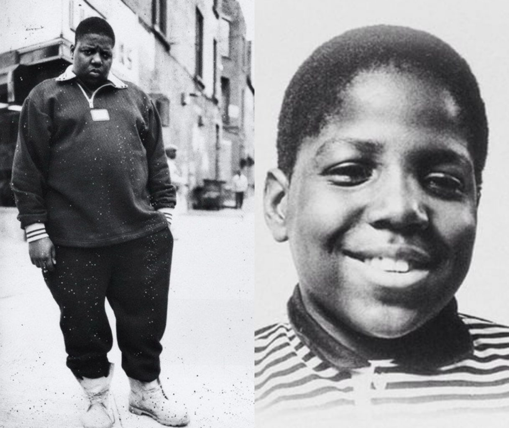
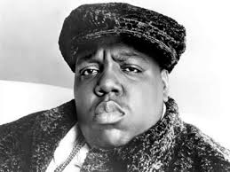
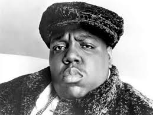

Biggie Smalls zmienił swój pseudonim na Notorious B.I.G., zadebiutował w 1993 na remiksie singla Mary J. Blige "Real Love". Wypuścił swój debiutancki album Ready to Die w październiku 1994. Również w 1994 Biggie ożenił się z piosenkarką R&B Faith Evans.
W listopadzie 1994 w budynku, w którym nagrywał Biggie, został postrzelony i okradziony Tupac Shakur. Notorious zaprzeczył wszystkim oskarżeniom o związki z tą sprawą.
Został również posądzony o związek z zabójstwem Tupaca w 1996 roku.

Niedługo po śmierci na jego cześć ukazała się piosenka "I'll Be Missing You" w wykonaniu Puffa Daddy'ego i Faith Evans.
16 stycznia 2009 roku w Stanach Zjednoczonych odbyła się premiera filmu biograficznego o życiu Notoriousa B.I.G. pt. Notorious.
Życiorys
Dorastał na Brooklynie. Interesował się rapem od młodości, tworząc z takimi grupami jak Old Gold Brothers i The Techniques, z którymi pierwszy raz znalazł się w profesjonalnym studiu nagraniowym. Od początku używał swojego pseudonimu Biggie Smalls ze względu na pokaźne rozmiary (193 cm wysokości, waga prawie 181 kg). Pseudonim artystyczny zaczerpnął z filmu z 1975 roku pt. "Let's Do It Again". W wieku 17 lat (pomimo iż był dobrym uczniem) rzucił szkołę dla życia na ulicy. Zaczął handlować narkotykami. Osadzony na 9 miesięcy w więzieniu, nagrał na czterościeżkowcu pierwsze swoje demo. Dostało ono pozytywną recenzję w hiphopowym magazynie "The Source". Zainteresował się nim Sean "Puffy" Combs z wytwórni Uptown Records. Niedługo po tym, jak Biggie zaczął pracować dla Uptown, Combs odszedł z wytwórni zabierając Biggiego, by założyć Bad Boy Records.Biggie Smalls zmienił swój pseudonim na Notorious B.I.G., zadebiutował w 1993 na remiksie singla Mary J. Blige "Real Love". Wypuścił swój debiutancki album Ready to Die w październiku 1994. Również w 1994 Biggie ożenił się z piosenkarką R&B Faith Evans.
W listopadzie 1994 w budynku, w którym nagrywał Biggie, został postrzelony i okradziony Tupac Shakur. Notorious zaprzeczył wszystkim oskarżeniom o związki z tą sprawą.
Został również posądzony o związek z zabójstwem Tupaca w 1996 roku.

Śmierć
9 marca 1997 w Los Angeles, po imprezie promującej jego nadchodzący album, Notorious B.I.G wyjeżdżając czarnym Chevroletem Tahoe z budynku, zatrzymał się na światłach na skrzyżowaniu South Fairfax Avenue i Wilshire Boulevard. Po chwili z lewej strony podjechał czarny sedan, z którego oddano 7 strzałów. Do dziś sprawa zabójstwa nie została wyjaśniona, nieznany jest sprawca ani motyw zabójstwa (jedna z hipotez głosi, że była to zemsta za śmierć Tupaca Shakura). Inna wskazuje, że miał z tym związek P.Diddy, któremu śmierć Notoriousa pomogła w wypromowaniu się w roli rapera.Niedługo po śmierci na jego cześć ukazała się piosenka "I'll Be Missing You" w wykonaniu Puffa Daddy'ego i Faith Evans.
16 stycznia 2009 roku w Stanach Zjednoczonych odbyła się premiera filmu biograficznego o życiu Notoriousa B.I.G. pt. Notorious.